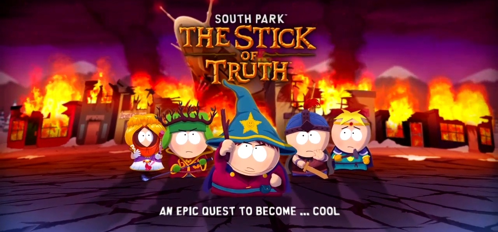

SouthParkFrameWork
A development and research framework focused on South Park games. The project provides tooling, debugging utilities, asset exploration, reverse engineering support, and a foundation for future preservation work.
View Project